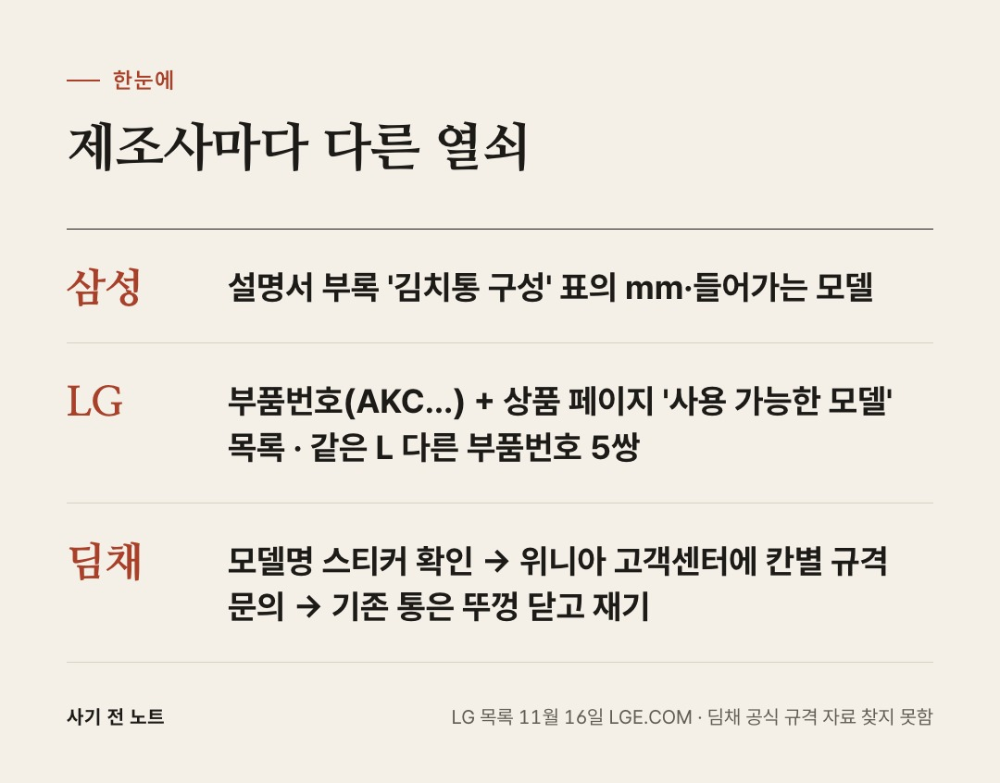

이 게시물은 쿠팡 파트너스 활동의 일환으로, 이에 따른 일정액의 수수료를 제공받습니다.
김치냉장고 김치통 사이즈, 8L 통끼리도 3mm 어긋나는 설명서
김장 전에 김치통을 하나 더 산다면 'L'보다 mm와 부품번호를 먼저 보세요. 삼성 420L 상칸 8L 통은 설명서에 따라 331×223×173mm와 331×220×176mm, 같은 8L인데 깊이·높이가 3mm씩 다릅니다. 삼성 490L 4도어(RK70F49F1ZG 등)라면 중칸에 4개가 나란히 들어가는 안심 10.8L 통(256×207×302mm)이 그 칸의 짝이에요.
490L 4도어 중칸을 채울 통이라면, 삼성 안심 10.8L(11월 16일 쿠팡 21,450원)

삼성 490L 중칸은 10.8L, 주문 전에 모델명 한 줄
판매 페이지 상품명에는 '안심 10.8L'로만 적혀 있어, 설명서 속 그 통과 같은 부품인지는 확인하지 못했어요. 냉장고 모델명을 판매자에게 보내 맞는지 물어보면 끝납니다.
상칸·하칸 규격은 아래 그림에 모았어요. 490L 4도어 통을 모두 더하면 114.9L로 RK70F49F1ZG 사양표의 김치통 용량과 같고, 10.9L와 11.2L 통은 너비 1mm 차이인데 용량 표기는 0.3L 차이. L 숫자와 실제 크기가 따로 움직인다는 뜻이죠.

담을 때는 통의 70~80%만, 국물에 잠기게. 삼성전자서비스 안내입니다.
LG는 같은 11.3L에도 부품번호가 둘
11월 16일 기준 LGE.COM 소모품 목록의 김치통 30종 가운데 같은 용량·같은 칸인데 부품번호가 다른 통이 다섯 쌍이었어요. 10.2L 상칸 두 통은 44,100원과 22,700원, 값이 두 배 가까이 납니다. 그래서 기준은 상품 페이지 '사용 가능한 모델' 목록에 내 모델이 있느냐예요.
중·하칸 겸용 11.5L(AKC67523734)은 상품명에 부품번호가 함께 있어 공식몰과 바로 맞춰 볼 수 있었습니다. 11월 16일 쿠팡 30,300원, LGE.COM 회원할인가 23,500원으로 공식몰이 7,800원 낮았고요.
내 모델이 AKC67523734 목록에 있고 쿠팡 배송이 편하다면, LG 디오스 김치통 11.5L(11월 16일 쿠팡 30,300원)
딤채는 문 안쪽 모델명 스티커부터
위니아 공식 페이지·설명서에서는 김치통 규격 자료를 찾지 못했어요. 스티커의 모델명으로 위니아 고객센터에 칸별 규격을 묻는 게 가장 확실하고, 쓰던 통을 잴 때는 뚜껑을 닫은 채로 재세요.

숫자는 삼성 RK80F·RK70F(2026년 10월 20일 판)·RQ 4도어 설명서와 LGE.COM 목록에서 옮겼고, 두 통 모두 제가 써 보지는 않았어요. 삼성 490L 4도어를 아직 고르는 중이라면 F1ZG와 M2Z의 32.7L 차이를 11월 17일 글에 따로 적어 두었습니다.
삼성은 mm, LG는 부품번호, 딤채는 모델명.
참고한 자료
- 삼성 RK80F·RK70F 사용 설명서(2026년 10월 20일 판): https://downloadcenter.samsung.com/content/PM/202610/20261020150621895/KO/start_here.html
- 삼성 RQ 4도어 사용 설명서: https://downloadcenter.samsung.com/content/PM/202501/20250103100230952/KO/start_here.html
- 삼성전자서비스 김치 보관 안내: https://www.samsungsvc.co.kr/solution/2912267
- LGE.COM 소모품 김치냉장고 목록: https://www.lge.co.kr/category/care-accessories/kimchi-refrigerator
#김치냉장고김치통사이즈 #삼성김치통사이즈 #딤채김치통사이즈 #LG김치통사이즈 #김치통